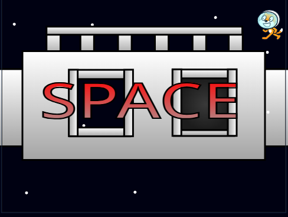
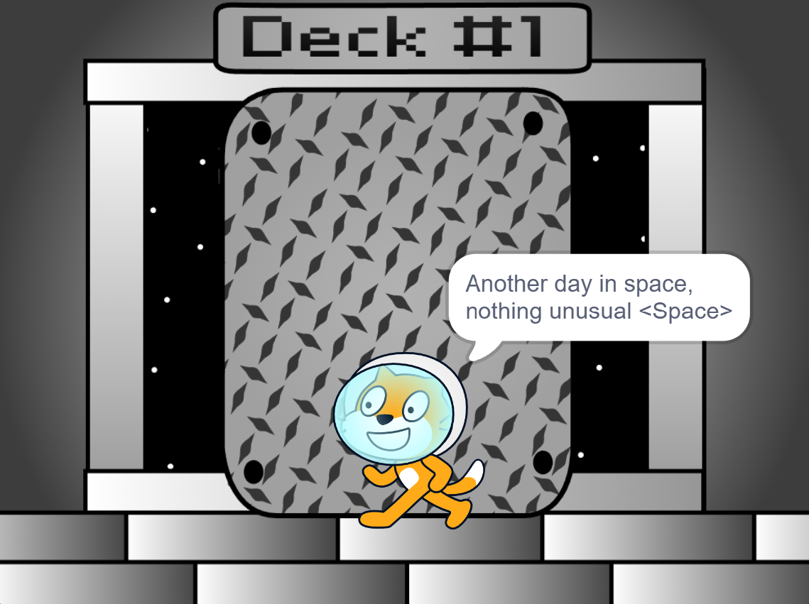
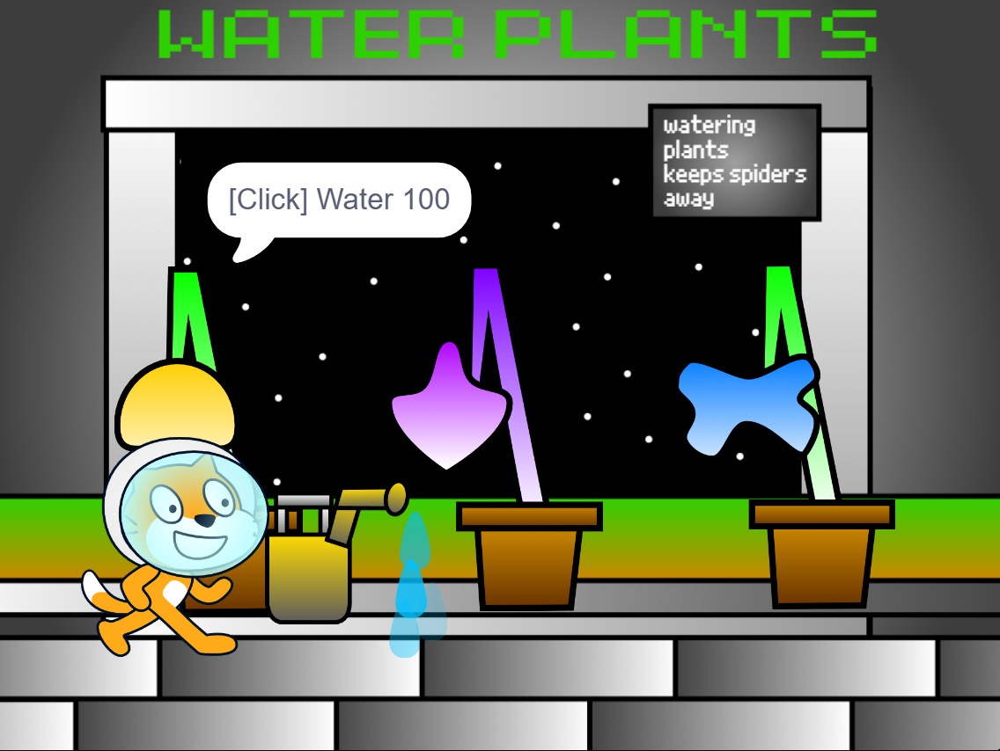

Hide from the monsters and finish your tasks
Space Station is an Horror game created by Voidder where you need to finish your tasks while you hide and escape from the monsters



The game is created on Scratch
Is one of the First voidder's games
WIP